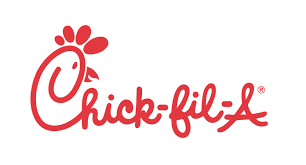

I applied to Chick-fil-A in October of 2016, this was even before the store was open. I was hired on as a team member and was so excited to start. The first couple of weeks before we were open, we had training sessions we could sign up for.
When new Chick-fil-A's first open, they send trainers to the store to help open, which is actually cool. So the first couple weeks I really enjoyed gettng to know the trainers that came. After I left, I still really enjoyed my job.
In August of 2017 I was promoted to a "Training Coordinator". This position was a step up from "Team Member", what I did as a training coordintor was help train new hires the correct way, while assisting them with any questions they had. After working here for almost a year I still really enjoyed going into work, but this was my senior year of school and I thought I knew what I wanted to do, because I always enjoyed film, but about 6 months before graduation, I decided I wanted to pursue buiness.
About 9 months after my first promotion, I became a "Team Leader", this position was a big step for me and I was so thankful to receive it. After I graduated, the idea of being a trainer really appealed to me, being sent to another state, with travel, food, and hotel paid for, just seemed really nice. So I decided to do what the trainers that were sent here to do. I applied for a Grand Opening down in Florence, SC. I went there for a week and really enjoyed the beautiful weather and the change of scenery.